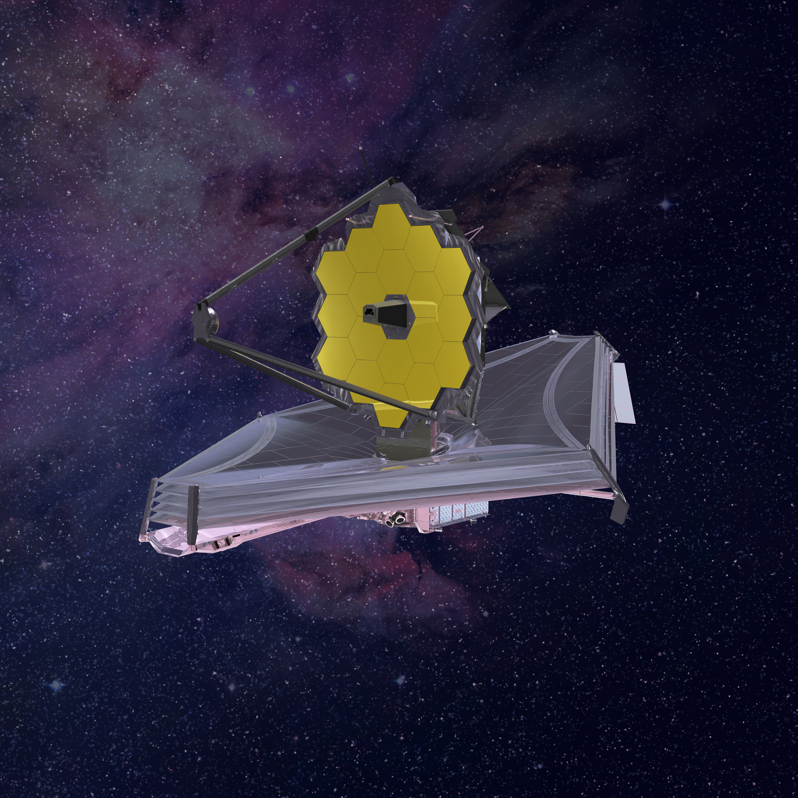
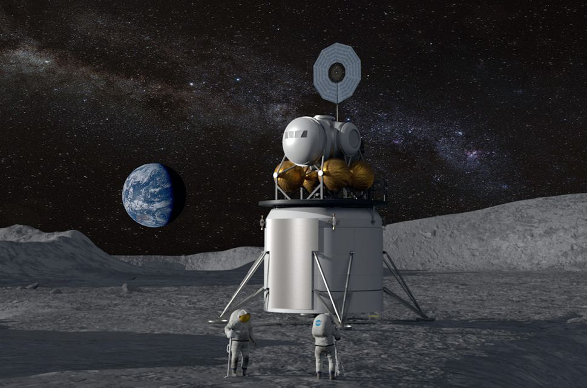

Миссии и открытия
Человечество постоянно стремится за пределы Земли, отправляя аппараты для изучения тайн Вселенной.

Марсоходы Perseverance
Эти роботы исследуют поверхность Марса в поисках признаков древней жизни. Они собирают образцы грунта, делают снимки в высоком разрешении и даже записывают звуки красной планеты. Благодаря им мы знаем, что на Марсе когда-то была вода.

Телескоп Джеймс Уэбб
Самый мощный космический телескоп в истории. Он позволяет заглянуть в прошлое Вселенной, изучая свет первых звезд и галактик, сформировавшихся более 13 миллиардов лет назад. Уэбб работает в инфракрасном диапазоне и видит то, что скрыто от обычных телескопов.

Программа Артемида (Artemis)
Новая амбициозная программа NASA по возвращению человека на Луну. Цель миссии — построить устойчивую базу на южном полюсе Луны и подготовить технологии для будущего прыжка человечества к Марсу.